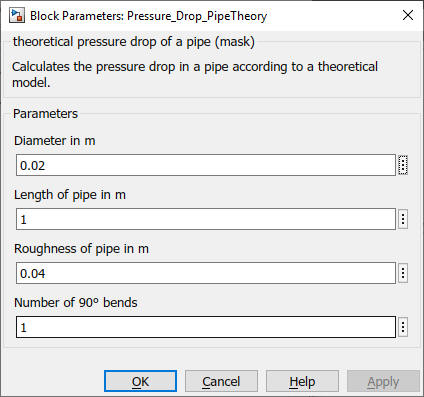

Pressure_Drop_PipeTheory
Path: CARNOT/Basic/Pressure_Drop
Purpose:
Calculate the pressure drop in a pipe according to theoretical values.
Description:
Calculate the pressure drop of a fluid flow in a pipe with a theoretical approach.
The equation is based on the hydraulic diameter (in m) of the pipe or duct:
D_hydr = 4 * Crosssection-Area / Circumference
The difference in static height dp between inlet and outlet is also taken
into account. Outlet above inlet has a positive height and a decrease
in static pressure.
dp = height/N_nodes*grav*density(Tnodes)
Laminar flow is assumed for Reynolds numbers Re < 2050. In ths case the
friction coefficient is
fh = 64.0/Re
The equivalent length l_eq in this case is [Lencastre, 1996]
l_eq = D_hydr * (1.6 - Re/2000) / fh * number_of_90°_bends
For Renolds number between 2050 and 3000 a transition zone is considered:
The friction coefficient is a linear interpolation between laminar and tubulent
value.
For fully turbulent flow with Re > 2050 the coefficient is calculated with
the Blasius and Nikuradse correlation [Bohl, 2014]. A developing flow correction
according to Lencastre is applied.
Input:
| Tnodes | : | node temperature or temperatures of the pipe in °C |
| THBin | : | incomming Thermo Hydraulic Bus |
Output:
| THB | : | leaving Thermo Hydraulic Bus |
Parameters and Dialog Box:

Literature:
Lencastre, A.: Hydraulique generale, Eyrolles Safege, 1996
Bohl, W.; Elmendorf., W.: Technische Strömungslehre, Vogel Verlag, 2014
Characteristics:
| Direct Feedthrough | : | Yes |
| Sample Time | : | Inherited from driving block |
| Vectorized | : | No |